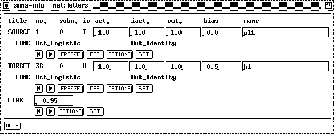
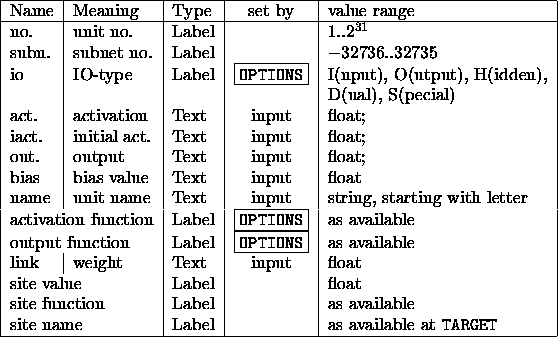
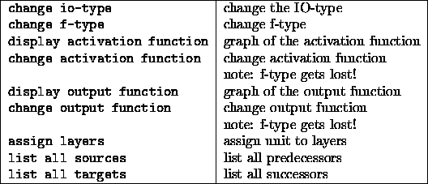
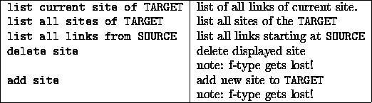

The info panel displays all data of two units and the link between them. The unit at the beginning of the link is called SOURCE, the other TARGET. One may run sequentially through all connections or sites of the TARGET unit with the arrow buttons and look at the corresponding source units and vice versa.
This panel is also very important for editing, since some operations
refer to the displayed TARGET unit or (
SOURCE TARGET) link. A default unit can also be
created here, whose values (activation, bias, IO-type, subnet number,
layer numbers, activation function, and output function) are
copied into all selected units of the net.
TARGET) link. A default unit can also be
created here, whose values (activation, bias, IO-type, subnet number,
layer numbers, activation function, and output function) are
copied into all selected units of the net.
The source unit of a link can also be specified in a 2D display by pressing the middle mouse button, the target unit by releasing it. To select a link between two units the user presses the middle mouse button on the source unit in a 2D display, moves the mouse to the target unit while holding down the mouse button and releases it at the target unit. Now the selected units and their link are displayed in the info panel. If no link exists between two units selected in a 2D display, the TARGET is displayed with its first link, thereby changing SOURCE.
In table  the various fields are listed. The fields in
the second line of the SOURCE or TARGET unit display the name of the
activation function, name of the output function, name of the f-type
(if available). The fields in the line LINK have the following
meaning: weight, site value, site function, name of the site. Most
often only a link weight is available. In this case no information
about sites is displayed.
the various fields are listed. The fields in
the second line of the SOURCE or TARGET unit display the name of the
activation function, name of the output function, name of the f-type
(if available). The fields in the line LINK have the following
meaning: weight, site value, site function, name of the site. Most
often only a link weight is available. In this case no information
about sites is displayed.

Unit number, unit subnet number, site value, and site function cannot be modified. To change attributes of type text, the cursor has to be exactly in the corresponding field.
There are the following buttons for the units (from left to right):
 : Calls the following menu:
: Calls the following menu:

 : Only after clicking this button the attributes
of the corresponding unit are set to the specified value. The unit is
also redrawn. Therefore the values can be changed without immediate
effect on the unit.
: Only after clicking this button the attributes
of the corresponding unit are set to the specified value. The unit is
also redrawn. Therefore the values can be changed without immediate
effect on the unit.
There exist the following buttons for links (from left to right):
 : Calls the following menu:
: Calls the following menu:
